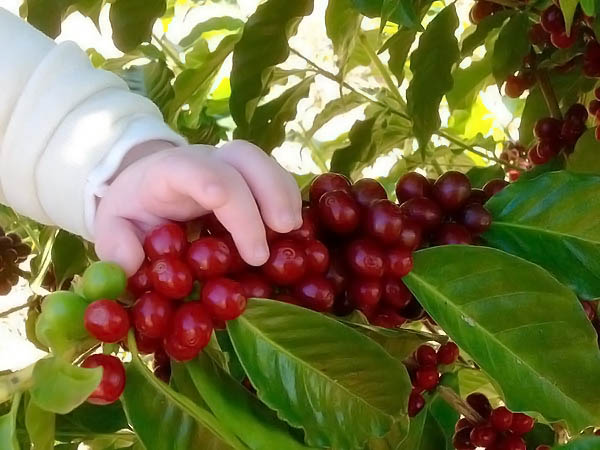
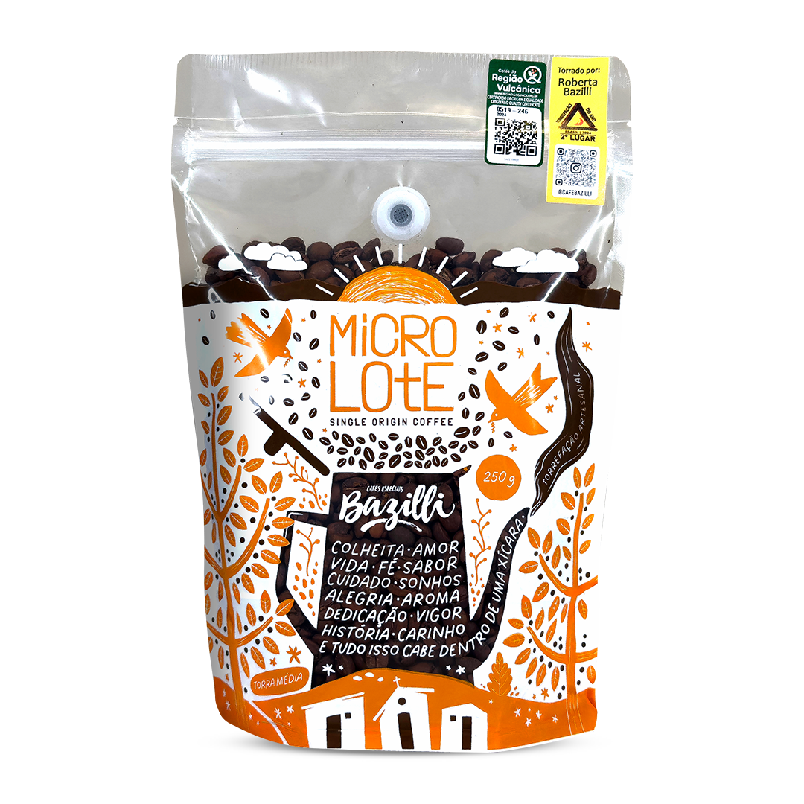
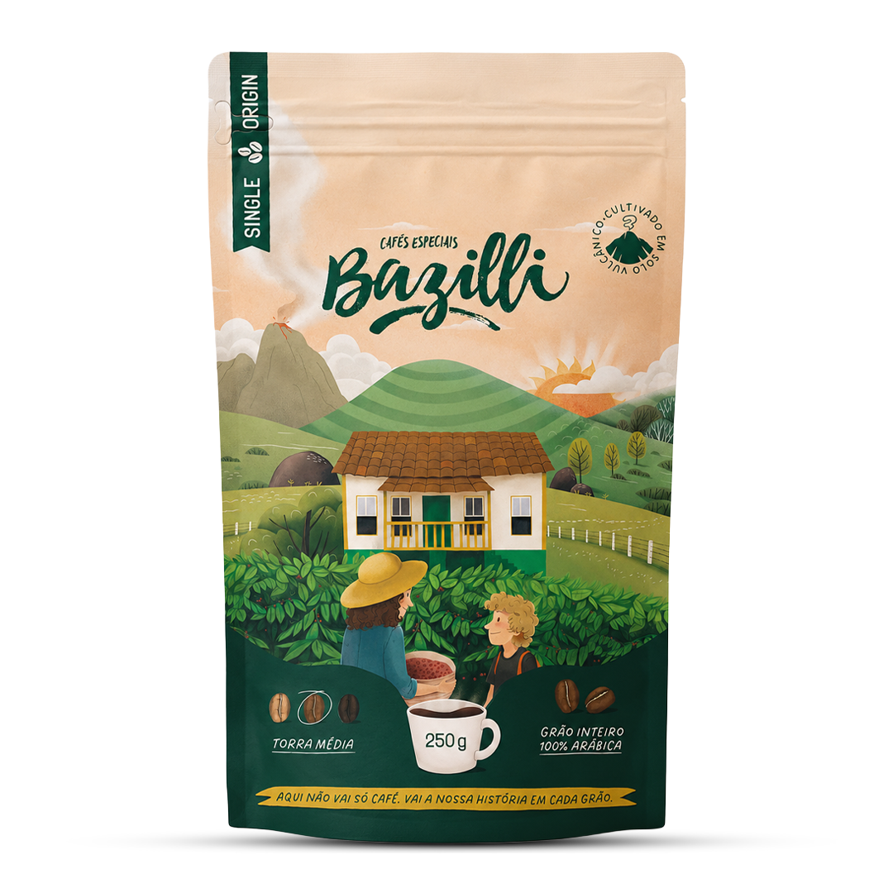
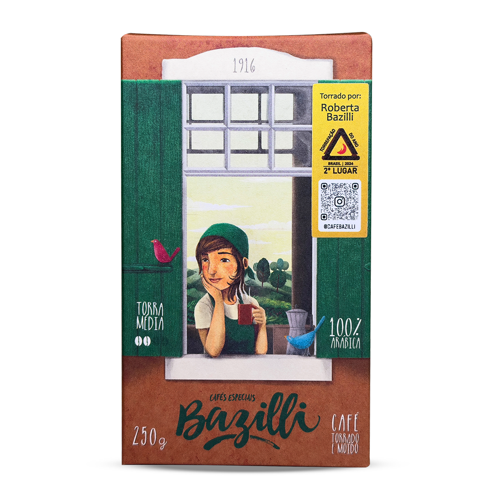
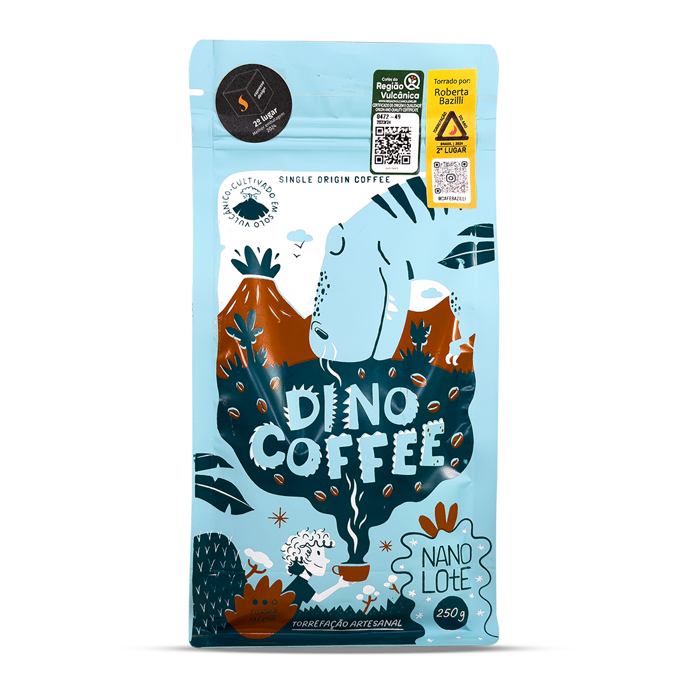
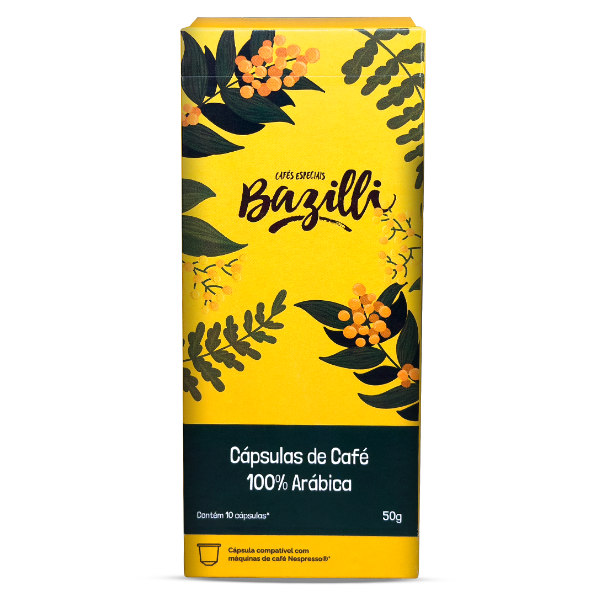
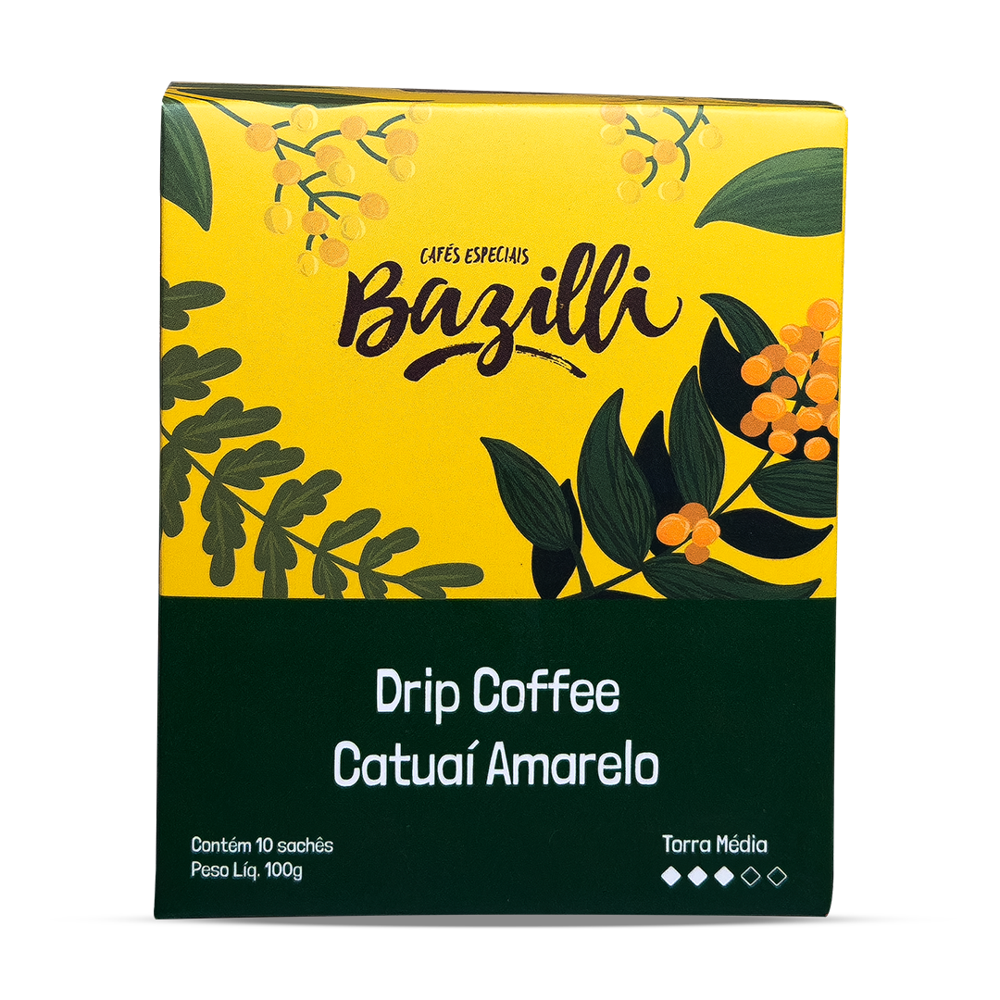

Capítulo 01 · 1916Tudo começa
Tudo começa
na terra.
A família Bazilli se dedica ao café desde 1916, no Sítio Boa Vista do Engano, em Caconde. Uma história que continua na mesma origem, da lavoura à xícara.

Cold brew de café especial sabor limão, extraído a frio, gaseificado e pronto para beber. Produzido com café 100% Arábica do Sítio Boa Vista do Engano, em Caconde/SP.
Da lavoura.
À xícara.
Café especial 100% Arábica
Caconde, São Paulo, Brasil
Sazonal · 100% Arábica
Lotes selecionados a cada colheita, com origem no Sítio Boa Vista do Engano. O processamento e o perfil sensorial variam conforme a edição disponível.
Torra média · para moer na hora
Café especial de Caconde/SP, cultivado a 1.100 metros. Grãos selecionados de peneira 17 acima, com torra artesanal conduzida por Roberta Bazilli.
Café especial · pronto para preparar
Café 100% Arábica produzido em Caconde/SP, torrado artesanalmente e já moído. A embalagem a vácuo ajuda a preservar aroma e frescor até a abertura.
Edições limitadas · tradição familiar
Nanolote produzido em Caconde, com seleção cuidadosa e torra artesanal de Roberta Bazilli. Inspirado em Theo, da sexta geração da família, cada edição tem seu próprio perfil.
100% Arábica · sistema Nespresso®
Café especial de Caconde em cápsulas, com processo natural e torra média artesanal. Uma opção prática para preparar sua xícara em máquinas compatíveis com o sistema Nespresso®.
Filtro individual · basta água quente
Café especial em sachês com filtro que se apoia na xícara. Abra, encaixe e acrescente água quente: uma forma simples de levar o Café Bazilli para o trabalho ou a viagem.
Extraído a frio · sabor limão
Bebida gaseificada e pronta para beber, feita com café especial 100% Arábica do Sítio Boa Vista do Engano. Edição comemorativa dos 20 anos da marca.







Coffea arabica
Os cafés especiais Bazilli são 100% Arábica. Produção própria e seleção cuidadosa acompanham o grão, da lavoura até a embalagem.
UMA ORIGEM. CUIDADO EM CADA GRÃO.
A família Bazilli se dedica ao café desde 1916, no Sítio Boa Vista do Engano, em Caconde. Uma história que continua na mesma origem, da lavoura à xícara.

“Diante de tantos títulos, não poderíamos esquecer do mais importante: amor pelo que faz!”
Vice-campeã nacional do Torrefação do Ano Brasil, em 2024.
Uma parada obrigatória no mapa dos apaixonados por café.
Reconhecimentos: Santo Café, Torrefação do Ano, Rotas do Café, Q-Grader, Região Vulcânica, Caconde/SP.
Café torrado em grãos
Para moer na hora e explorar cada método.
Assine e ganhe 15%
Natural · Honey · Lavado
Edições limitadas, selecionadas lote a lote.
Assine e ganhe 15%
Café torrado e moído
Praticidade no preparo diário, com origem.
Assine e ganhe 15%
Os cafés são enviados de Caconde/SP para todo o Brasil. Deixe seu e-mail e avisaremos quando sua cidade estiver na rota.
Encontre onde comprar